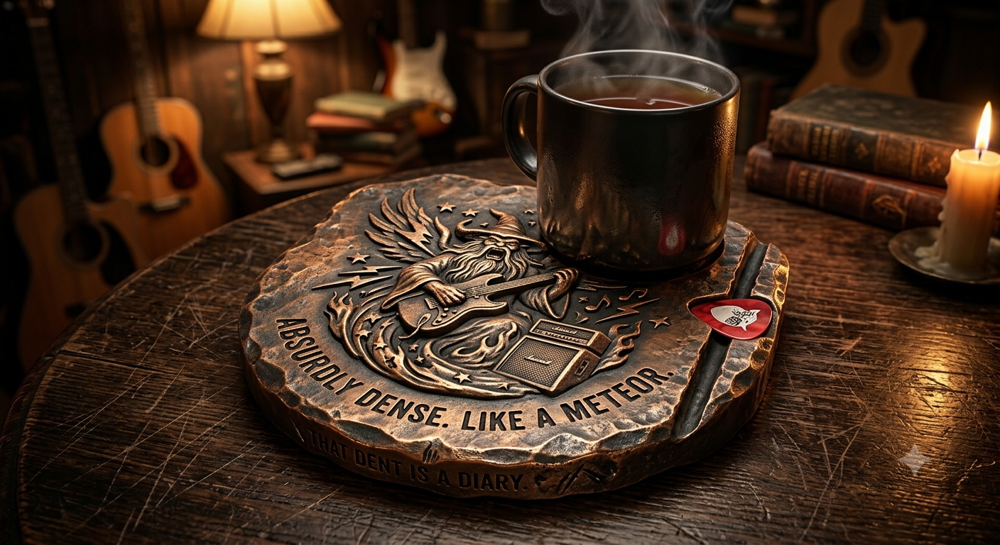

For this in-class design challenge, my partner Pedro and I had to design a custom drink coaster for a client. The twist was that the client was a well-known person we could not actually interview, so we used generative AI to stand in for them: first to help us build a set of interview questions, then to answer those questions in character, and finally to visualize the design we specified.
Part 1 — Interview questions. Before picking a client, we wrote a list of questions aimed at learning enough about a person to design something specific to them rather than generic. Ours included: what temperature of beverage do you usually drink; how would you describe the space the coaster will be in (messy, organized, bright, dark, and where); would you rather your things blend in or start conversations; name one object you'd never replace and explain why; do you like new, clean, unused objects, or objects that have already lived a life and are being reused; what are your favorite hobbies and activities; do you have a specific fear that's off limits; in a story, do you like a slow satisfying end or a big twist ending; would you want the coaster to have any other functions; who is the coaster for; if the coaster told a chapter in your life, which chapter would you choose; and if you could design one absurd, over-the-top, impractical element just for fun, what would it be?
Part 2 — The client. We chose Jack Black. Running the interview produced a set of design criteria in three groups. Functionally, the coaster needed high heat tolerance, a secondary function that was strictly mechanical, and enough weight to feel heavy. Visually, he preferred worn objects that tell a story, a warm and dim environment, and something that would start a conversation rather than blend in. In tone, the story should be about his early garage-band era, the design should be straightforward but hide a small feature you only find later, and nothing about it should be morbid. It was also meant for guests, so it had to feel inviting and lived in.
Part 3 — The design. The result is a heavy cast-bronze coaster with an irregular, hand-hammered edge so it reads as an object that has already been used rather than a new one. The face is a raised relief of a wizard playing an electric guitar next to an amplifier, a reference to the garage-band era we were asked to tell. Two lines are engraved around the rim, "Absurdly dense. Like a meteor." and "That dent is a diary," so the heaviness and the wear are part of the story instead of flaws. The mechanical secondary function is a groove milled into the rim that holds a guitar pick, which is the small detail a guest only notices once they pick the coaster up. The bronze handles hot mugs, and the mass keeps it from sliding.
Reflection. What surprised me most was how much of the design work came from the emotional side of the client rather than the technical side. I went in expecting the useful answers to be things like cup size and heat resistance, but the criteria that actually shaped the design were the ones about worn objects, storytelling, and how the room should feel. How the client feels is a much larger part of the design process than I originally thought.
Tools used. Claude Opus 5 for the interview, since its reasoning and objectivity were good, and Gemini 3.1 Pro to generate the image of the coaster.